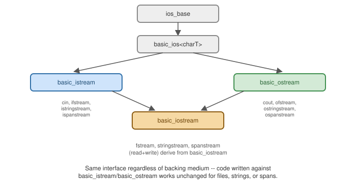

Input, Output, and Streams
|
This content was generated with the assistance of AI and should be verified against the official documentation before being relied on in production. |
The Iostreams Hierarchy

std::cin/std::cout/std::cerr are pre-constructed istream/ostream objects bound to the process’s
standard streams; every other stream type (file, string, span) plugs a different backing medium into the same
istream/ostream interface.
Formatted vs. Unformatted I/O
#include <iostream>
#include <string>
int main() {
int n;
std::cin >> n; // formatted: skips leading whitespace, parses per n's type
std::string line;
std::getline(std::cin, line); // unformatted-ish: reads a whole line verbatim, including spaces
char buffer[16];
std::cin.read(buffer, sizeof(buffer)); // fully unformatted: raw bytes, no parsing at all
std::cout.write(buffer, std::cin.gcount()); // gcount(): how many bytes the last unformatted read actually got
}Always check a stream’s state after reading (if (std::cin >> n) or if (std::cin.fail())) — a failed
extraction leaves the target variable unspecified and the stream in a failed state that silently skips every
subsequent operation until cleared.
Manipulators and <iomanip>
#include <iostream>
#include <iomanip>
int main() {
std::cout << std::fixed << std::setprecision(2) << 3.14159 << '\n'; // 3.14
std::cout << std::hex << 255 << '\n'; // ff
std::cout << std::dec << std::setw(10) << std::setfill('*') << 42 << '\n'; // ********42
std::cout << std::boolalpha << true << '\n'; // true, not 1
}Most manipulators (std::hex, std::fixed, std::boolalpha) are sticky — they persist until changed
again; std::setw is the notable exception, applying to only the next single insertion.
String Streams
#include <sstream>
#include <string>
#include <iostream>
int main() {
std::ostringstream out;
out << "x=" << 5 << ", y=" << 10;
std::string built = out.str();
std::cout << built << '\n';
std::istringstream in("42 3.14 hello");
int i; double d; std::string s;
in >> i >> d >> s;
std::cout << i << ' ' << d << ' ' << s << '\n';
}Binary File I/O
#include <fstream>
#include <vector>
void writeInts(const std::vector<int>& data, const char* path) {
std::ofstream out(path, std::ios::binary);
out.write(reinterpret_cast<const char*>(data.data()), data.size() * sizeof(int));
}
std::vector<int> readInts(const char* path, std::size_t count) {
std::vector<int> data(count);
std::ifstream in(path, std::ios::binary);
in.read(reinterpret_cast<char*>(data.data()), count * sizeof(int));
return data;
}std::ios::binary disables text-mode newline translation (relevant on Windows); always open in binary mode
when reading/writing raw bytes rather than text.
std::span Buffers (<spanstream>)
C++23’s <spanstream> streams directly over an existing, fixed, non-owning buffer (a std::span) — no
internal allocation, unlike stringstream's owned std::string buffer:
#include <spanstream>
#include <array>
int main() {
std::array<char, 64> buffer{};
std::ospanstream out{std::span<char>(buffer)}; // braces, not parens -- parens here would be parsed as a
// function declaration (the "most vexing parse")
out << "x=" << 5;
auto written = out.span(); // the portion of "buffer" actually written, no separate allocation
(void)written;
}Locales
A std::locale controls culture-sensitive formatting (thousands separators, decimal points, currency symbols,
date formats) for a stream:
#include <iostream>
#include <locale>
int main() {
std::cout.imbue(std::locale("")); // the user's default OS locale, instead of the always-active "C" locale
std::cout << 1234567 << '\n'; // e.g. "1,234,567" or "1.234.567" depending on the imbued locale
}std::locale("") depends on locale data actually being installed/configured on the host — it throws
std::runtime_error if the requested locale isn’t available, so wrap it accordingly in production code.
std::osyncstream
C++20’s std::osyncstream buffers output and flushes it as one atomic block on destruction, preventing
interleaved garbled output when multiple threads write to the same stream concurrently (see
Threads and Synchronization):
#include <syncstream>
#include <iostream>
#include <thread>
void worker(int id) {
std::osyncstream(std::cout) << "worker " << id << " done\n"; // the whole line is flushed atomically
}std::print vs. Streams
std::print/std::println (see Strings and Text) write
formatted text more concisely than chained << operators, and — on platforms where the standard library
implements it — correctly translate encoding to a Windows console without extra setup, something std::cout
with narrow char does not always do correctly:
// streams:
std::cout << "x=" << x << ", y=" << y << '\n';
// std::print:
std::println("x={}, y={}", x, y);
std::print/std::println need <print>, which libstdc++ ships from GCC 14 and libc++ from
LLVM 18 (including the Apple clang 21 and libc++ toolchain used for this section); see
Getting Started. The std::cout form compiles with any
standard library.
|
Streams in Action: State, Parsing and Files
A stream is a formatted front end (istream/ostream) over a buffer (streambuf) over a source or sink such as a
file or a string. Formatting flags and a four-bit state (goodbit, eofbit, failbit, badbit) live in the
stream object. The state is what makes stream code subtle: once a stream has failed, every later operation is
silently a no-op until you call clear().
operator<<, flags, width, precision"] IS["std::istream
operator>>, getline, state bits"] end OS --> SB["std::streambuf
buffering, locale, position"] IS --> SB SB --> F["file (basic_filebuf)"] SB --> S["string (basic_stringbuf)"] SB --> C["console (stdout/stdin sync)"]
#include <fstream>
#include <iomanip>
#include <iostream>
#include <print>
#include <sstream>
#include <string>
#include <vector>
struct Record { int id; double price; };
int main() {
// Formatted output with manipulators; they change stream state that persists until reset.
std::ostringstream os;
os << std::left << std::setw(8) << "Dune" << std::right << std::setw(8) << std::fixed
<< std::setprecision(2) << 12.5 << '|' << std::hex << 255 << std::dec << ' ' << 255;
std::println("{}", os.str());
// Parsing with istringstream: stops at the first failure and sets failbit.
std::istringstream in("42 3.5 oops");
int n; double x; int bad;
in >> n >> x;
std::println("read {} and {}; good: {}", n, x, in.good());
in >> bad;
std::println("after reading 'oops' as int: fail={} eof={}", in.fail(), in.eof());
// getline loops: the loop condition tests the extraction, not eof().
std::istringstream lines("alpha\nbeta\n\ngamma");
std::string line;
int count = 0;
while (std::getline(lines, line)) ++count;
std::println("{} lines (the empty one counts)", count);
// Text file round trip; a stream closes in its destructor (RAII).
const char* path = "inventory.txt";
{
std::ofstream out(path);
out << "isbn-1 Dune 2\nisbn-2 Emma 0\n";
}
{
std::ifstream f(path);
std::string isbn, title; int copies;
while (f >> isbn >> title >> copies) std::println(" {} -> {} ({})", isbn, title, copies);
}
// Binary I/O writes the in-memory representation: only for same-machine, trivially-copyable data.
std::vector<Record> recs{{1, 9.5}, {2, 19.0}};
{
std::ofstream bin("recs.bin", std::ios::binary);
bin.write(reinterpret_cast<const char*>(recs.data()), recs.size() * sizeof(Record));
}
std::vector<Record> back(2);
{
std::ifstream bin("recs.bin", std::ios::binary);
bin.read(reinterpret_cast<char*>(back.data()), back.size() * sizeof(Record));
std::println("read back {} bytes, id={} price={}", bin.gcount(), back[1].id, back[1].price);
}
std::ifstream missing("does-not-exist.txt");
std::println("opening a missing file: is_open={}", missing.is_open());
std::cerr << "diagnostics go to cerr, unbuffered\n";
}$ clang++ -std=c++23 -Wall -Wextra io.cpp -o io
$ ./io
Dune 12.50|ff 255
read 42 and 3.5; good: true
after reading 'oops' as int: fail=true eof=false
4 lines (the empty one counts)
isbn-1 -> Dune (2)
isbn-2 -> Emma (0)
read back 32 bytes, id=2 price=19
opening a missing file: is_open=false
diagnostics go to cerr, unbuffered-
Manipulators such as
std::hexchange the stream’s state permanently (std::setwis the exception: it resets after one output). The outputff 255showsstd::decbeing needed to return to decimal. -
After the extraction of
oopsinto anint, the stream is in the fail state.in.good()was still true after the two successful reads, which is why42 3.5parsed. Later reads would all fail untilin.clear(); always test the stream (if (in >> n)) rather than reading blindly. -
while (std::getline(lines, line))tests the result of the extraction. The common bugwhile (!in.eof())loops once too often, becauseeofonly becomes true after a read hits the end. -
File streams are RAII: the file closes when the stream is destroyed, so the inner scopes above flush and close
inventory.txtbefore it is read again. Opening a missing file does not throw by default; checkis_open()or callexceptions(std::ios::failbit). -
Binary I/O dumps the object’s bytes. It is correct only for trivially copyable types, on the same platform, with the same padding and endianness; use a serialization format for anything that leaves the machine.
-
std::cerris unbuffered and goes to a different stream thanstd::cout;std::printlnwrites tostdoutand is the preferred output for new code. The<spanstream>stream over astd::spanis C++23 but is not provided by the library used for this page.
See Also
-
C: Input, Output and Files — the
<stdio.h>FILE*API, still available in C++ as<cstdio>and often still the pragmatic choice.